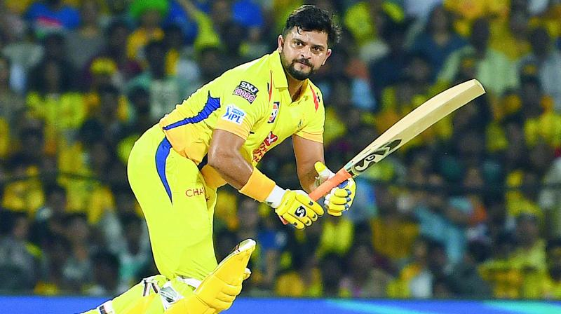

Few cricket team images
- Favorite 1st indian cricketer Virat Kohli
- Favorite 2nd indian cricketer Mahendra singh Dhoni
- Favorite 3rd indian cricketer Suresh Raina



Cricket is a bat-and-ball game played between two teams of eleven players on a field at the centre of which is a 22-yard (20-metre) pitch with a wicket at each end,
each comprising two bails balanced on three stumps. The batting side scores runs by striking the ball bowled at the wicket with the bat (and running between the wickets),
while the bowling and fielding side tries to prevent this (by preventing the ball from leaving the field, and getting the ball to either wicket) and dismiss each batter (so they are "out")
Forms of cricket range from Twenty20, with each team batting for a single innings of 20 overs, to Test matches played over five days. Traditionally cricketers play in all-white kit,
but in limited overs cricket they wear club or team colours. In addition to the basic kit, some players wear protective gear to prevent injury caused by the ball, which is a hard,
solid spheroid made of compressed leather with a slightly raised sewn seam enclosing a cork core layered with tightly wound string
Indian Team
Kohli
Dhoni
Raina
THIS TEAM IS STRONGEST IN CRICKET.Cricket Team